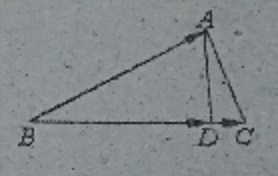

📖例题
更新于2019年4月18日
【平面向量】20190330A:
如图,在ΔABCä¸,AD是BC边上的高,è‹¥AB−→=a→,BC−→−=b→,则BD−→−=()

å°è’‹çš„解ç”:
知识点1:向量投影法则,数量积....................
æ ¹æ®å‘é‡æŠ•å½±æ³•åˆ™,即BD是BA在BC上的投影,
∴有BD−→−⋅BC−→−=BA−→⋅BC−→−
BD−→−⋅b→=a→⋅b→
|BD−→−|⋅|b→|=a→⋅b→
∴|BD−→−|=a→⋅b→|b→|
知识点2:单位向量,数乘....................
b→方å‘上的å•ä½å‘é‡æ˜¯b→|b→|
∴BD−→−方å‘上的å•ä½å‘é‡æ˜¯b→|b→|
∴BD−→−=|BD−→−|⋅单位向量=a→⋅b→|b→|⋅b→|b→|=a→⋅b→|b→|2⋅b→